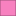

<!doctype html>
<html lang="en">
    <head>
        <meta charset="utf-8">
        <meta http-equiv="X-UA-Compatible" content="IE=edge">
        <meta name="viewport" content="initial-scale=1,user-scalable=no,maximum-scale=1,width=device-width">
        <meta name="mobile-web-app-capable" content="yes">
        <meta name="apple-mobile-web-app-capable" content="yes">
        <link rel="stylesheet" href="css/leaflet.css">
        <link rel="stylesheet" href="css/L.Control.Layers.Tree.css">
        <link rel="stylesheet" href="css/qgis2web.css">
        <link rel="stylesheet" href="css/fontawesome-all.min.css">
        <link rel="stylesheet" href="css/leaflet-search.css">
        <link rel="stylesheet" href="css/leaflet-control-geocoder.Geocoder.css">
        <link rel="stylesheet" href="css/leaflet-measure.css">
        <style>
        #map {
            width: 100wh;
            height: 98vh;
        }
        </style>
        <title>Projet autoroute A2 section haffouz-oued zroud lot7</title>
    </head>
    <body>
        <div id="map">
        </div>
        <script src="js/qgis2web_expressions.js"></script>
        <script src="js/leaflet.js"></script>
        <script src="js/L.Control.Layers.Tree.min.js"></script>
        <script src="js/leaflet.rotatedMarker.js"></script>
        <script src="js/leaflet.pattern.js"></script>
        <script src="js/leaflet-hash.js"></script>
        <script src="js/Autolinker.min.js"></script>
        <script src="js/rbush.min.js"></script>
        <script src="js/labelgun.min.js"></script>
        <script src="js/labels.js"></script>
        <script src="js/leaflet-control-geocoder.Geocoder.js"></script>
        <script src="js/leaflet-measure.js"></script>
        <script src="js/leaflet-search.js"></script>
        <script src="data/EMPRISEPROJET_1.js"></script>
        <script src="data/CHAUSSEE2_2.js"></script>
        <script src="data/TPC2_3.js"></script>
        <script src="data/OH_4.js"></script>
        <script src="data/TALUSREMBLAI_5.js"></script>
        <script src="data/Gouvernorats_TN_6.js"></script>
        <script src="data/TALUSDEBLAI_7.js"></script>
        <script src="data/Infosurdeblai_8.js"></script>
        <script src="data/Infosurrembali_9.js"></script>
        <script src="data/GOH_10.js"></script>
        <script src="data/OA_11.js"></script>
        <script src="data/InfosurOH_12.js"></script>
        <script src="data/ACCOTEMENT_13.js"></script>
        <script src="data/InfosurGOHOA_14.js"></script>
        <script src="data/BAU_15.js"></script>
        <script>
        var map = L.map('map', {
            zoomControl:true, maxZoom:28, minZoom:1
        }).fitBounds([[35.92049655214,7.971065768796754],[37.10741114612441,11.501687836704846]]);
        var hash = new L.Hash(map);
        map.attributionControl.setPrefix('<a href="https://github.com/tomchadwin/qgis2web" target="_blank">qgis2web</a> &middot; <a href="https://leafletjs.com" title="A JS library for interactive maps">Leaflet</a> &middot; <a href="https://qgis.org">QGIS</a>');
        var autolinker = new Autolinker({truncate: {length: 30, location: 'smart'}});
        function removeEmptyRowsFromPopupContent(content, feature) {
         var tempDiv = document.createElement('div');
         tempDiv.innerHTML = content;
         var rows = tempDiv.querySelectorAll('tr');
         for (var i = 0; i < rows.length; i++) {
             var td = rows[i].querySelector('td.visible-with-data');
             var key = td ? td.id : '';
             if (td && td.classList.contains('visible-with-data') && feature.properties[key] == null) {
                 rows[i].parentNode.removeChild(rows[i]);
             }
         }
         return tempDiv.innerHTML;
        }
        document.querySelector(".leaflet-popup-pane").addEventListener("load", function(event) {
          var tagName = event.target.tagName,
            popup = map._popup;
          // Also check if flag is already set.
          if (tagName === "IMG" && popup && !popup._updated) {
            popup._updated = true; // Set flag to prevent looping.
            popup.update();
          }
        }, true);
        var measureControl = new L.Control.Measure({
            position: 'topleft',
            primaryLengthUnit: 'feet',
            secondaryLengthUnit: 'miles',
            primaryAreaUnit: 'sqfeet',
            secondaryAreaUnit: 'sqmiles'
        });
        measureControl.addTo(map);
        document.getElementsByClassName('leaflet-control-measure-toggle')[0]
        .innerHTML = '';
        document.getElementsByClassName('leaflet-control-measure-toggle')[0]
        .className += ' fas fa-ruler';
        var bounds_group = new L.featureGroup([]);
        function setBounds() {
        }
        map.createPane('pane_GoogleSatellite_0');
        map.getPane('pane_GoogleSatellite_0').style.zIndex = 400;
        var layer_GoogleSatellite_0 = L.tileLayer('https://mt1.google.com/vt/lyrs=s&x={x}&y={y}&z={z}', {
            pane: 'pane_GoogleSatellite_0',
            opacity: 1.0,
            attribution: '',
            minZoom: 1,
            maxZoom: 28,
            minNativeZoom: 0,
            maxNativeZoom: 19
        });
        layer_GoogleSatellite_0;
        map.addLayer(layer_GoogleSatellite_0);
        function pop_EMPRISEPROJET_1(feature, layer) {
        }

        function style_EMPRISEPROJET_1_0() {
            return {
                pane: 'pane_EMPRISEPROJET_1',
                stroke: false, 
                fill: true,
                fillOpacity: 1,
                fillColor: 'rgba(163,205,185,1.0)',
                interactive: true,
            }
        }
        map.createPane('pane_EMPRISEPROJET_1');
        map.getPane('pane_EMPRISEPROJET_1').style.zIndex = 401;
        map.getPane('pane_EMPRISEPROJET_1').style['mix-blend-mode'] = 'normal';
        var layer_EMPRISEPROJET_1 = new L.geoJson(json_EMPRISEPROJET_1, {
            attribution: '',
            interactive: true,
            dataVar: 'json_EMPRISEPROJET_1',
            layerName: 'layer_EMPRISEPROJET_1',
            pane: 'pane_EMPRISEPROJET_1',
            onEachFeature: pop_EMPRISEPROJET_1,
            style: style_EMPRISEPROJET_1_0,
        });
        bounds_group.addLayer(layer_EMPRISEPROJET_1);
        map.addLayer(layer_EMPRISEPROJET_1);
        function pop_CHAUSSEE2_2(feature, layer) {
        }

        function style_CHAUSSEE2_2_0() {
            return {
                pane: 'pane_CHAUSSEE2_2',
                opacity: 1,
                color: 'rgba(247,247,247,1.0)',
                dashArray: '',
                lineCap: 'butt',
                lineJoin: 'miter',
                weight: 1.0, 
                fill: true,
                fillOpacity: 1,
                fillColor: 'rgba(82,82,82,1.0)',
                interactive: true,
            }
        }
        map.createPane('pane_CHAUSSEE2_2');
        map.getPane('pane_CHAUSSEE2_2').style.zIndex = 402;
        map.getPane('pane_CHAUSSEE2_2').style['mix-blend-mode'] = 'normal';
        var layer_CHAUSSEE2_2 = new L.geoJson(json_CHAUSSEE2_2, {
            attribution: '',
            interactive: true,
            dataVar: 'json_CHAUSSEE2_2',
            layerName: 'layer_CHAUSSEE2_2',
            pane: 'pane_CHAUSSEE2_2',
            onEachFeature: pop_CHAUSSEE2_2,
            style: style_CHAUSSEE2_2_0,
        });
        bounds_group.addLayer(layer_CHAUSSEE2_2);
        map.addLayer(layer_CHAUSSEE2_2);
        function pop_TPC2_3(feature, layer) {
        }

        function style_TPC2_3_0() {
            return {
                pane: 'pane_TPC2_3',
                opacity: 1,
                color: 'rgba(56,128,54,1.0)',
                dashArray: '',
                lineCap: 'butt',
                lineJoin: 'miter',
                weight: 1.0, 
                fill: true,
                fillOpacity: 1,
                fillColor: 'rgba(51,160,44,1.0)',
                interactive: true,
            }
        }
        map.createPane('pane_TPC2_3');
        map.getPane('pane_TPC2_3').style.zIndex = 403;
        map.getPane('pane_TPC2_3').style['mix-blend-mode'] = 'normal';
        var layer_TPC2_3 = new L.geoJson(json_TPC2_3, {
            attribution: '',
            interactive: true,
            dataVar: 'json_TPC2_3',
            layerName: 'layer_TPC2_3',
            pane: 'pane_TPC2_3',
            onEachFeature: pop_TPC2_3,
            style: style_TPC2_3_0,
        });
        bounds_group.addLayer(layer_TPC2_3);
        map.addLayer(layer_TPC2_3);
        function pop_OH_4(feature, layer) {
        }

        function style_OH_4_0() {
            return {
                pane: 'pane_OH_4',
                opacity: 1,
                color: 'rgba(100,152,210,1.0)',
                dashArray: '',
                lineCap: 'butt',
                lineJoin: 'miter',
                weight: 1.0, 
                fill: true,
                fillOpacity: 1,
                fillColor: 'rgba(165,191,221,1.0)',
                interactive: true,
            }
        }
        map.createPane('pane_OH_4');
        map.getPane('pane_OH_4').style.zIndex = 404;
        map.getPane('pane_OH_4').style['mix-blend-mode'] = 'normal';
        var layer_OH_4 = new L.geoJson(json_OH_4, {
            attribution: '',
            interactive: true,
            dataVar: 'json_OH_4',
            layerName: 'layer_OH_4',
            pane: 'pane_OH_4',
            onEachFeature: pop_OH_4,
            style: style_OH_4_0,
        });
        bounds_group.addLayer(layer_OH_4);
        map.addLayer(layer_OH_4);
        function pop_TALUSREMBLAI_5(feature, layer) {
        }

        function style_TALUSREMBLAI_5_0() {
            return {
                pane: 'pane_TALUSREMBLAI_5',
                opacity: 1,
                color: 'rgba(35,35,35,1.0)',
                dashArray: '',
                lineCap: 'butt',
                lineJoin: 'miter',
                weight: 1.0, 
                fill: true,
                fillOpacity: 1,
                fillColor: 'rgba(255,228,23,1.0)',
                interactive: true,
            }
        }
        map.createPane('pane_TALUSREMBLAI_5');
        map.getPane('pane_TALUSREMBLAI_5').style.zIndex = 405;
        map.getPane('pane_TALUSREMBLAI_5').style['mix-blend-mode'] = 'normal';
        var layer_TALUSREMBLAI_5 = new L.geoJson(json_TALUSREMBLAI_5, {
            attribution: '',
            interactive: true,
            dataVar: 'json_TALUSREMBLAI_5',
            layerName: 'layer_TALUSREMBLAI_5',
            pane: 'pane_TALUSREMBLAI_5',
            onEachFeature: pop_TALUSREMBLAI_5,
            style: style_TALUSREMBLAI_5_0,
        });
        bounds_group.addLayer(layer_TALUSREMBLAI_5);
        map.addLayer(layer_TALUSREMBLAI_5);
        function pop_Gouvernorats_TN_6(feature, layer) {
            var popupContent = '<table>\
                    <tr>\
                        <td colspan="2">' + (feature.properties['name_fr'] !== null ? autolinker.link(feature.properties['name_fr'].toLocaleString()) : '') + '</td>\
                    </tr>\
                    <tr>\
                        <td colspan="2">' + (feature.properties['REF_TN_COD'] !== null ? autolinker.link(feature.properties['REF_TN_COD'].toLocaleString()) : '') + '</td>\
                    </tr>\
                </table>';
            layer.bindPopup(popupContent, {maxHeight: 400});
            var popup = layer.getPopup();
            var content = popup.getContent();
            var updatedContent = removeEmptyRowsFromPopupContent(content, feature);
            popup.setContent(updatedContent);
        }

        function style_Gouvernorats_TN_6_0() {
            return {
                pane: 'pane_Gouvernorats_TN_6',
                opacity: 1,
                color: 'rgba(223,216,120,1.0)',
                dashArray: '',
                lineCap: 'square',
                lineJoin: 'bevel',
                weight: 1.0,
                fillOpacity: 0,
                interactive: true,
            }
        }
        map.createPane('pane_Gouvernorats_TN_6');
        map.getPane('pane_Gouvernorats_TN_6').style.zIndex = 406;
        map.getPane('pane_Gouvernorats_TN_6').style['mix-blend-mode'] = 'normal';
        var layer_Gouvernorats_TN_6 = new L.geoJson(json_Gouvernorats_TN_6, {
            attribution: '',
            interactive: true,
            dataVar: 'json_Gouvernorats_TN_6',
            layerName: 'layer_Gouvernorats_TN_6',
            pane: 'pane_Gouvernorats_TN_6',
            onEachFeature: pop_Gouvernorats_TN_6,
            style: style_Gouvernorats_TN_6_0,
        });
        bounds_group.addLayer(layer_Gouvernorats_TN_6);
        map.addLayer(layer_Gouvernorats_TN_6);
        function pop_TALUSDEBLAI_7(feature, layer) {
        }

        function style_TALUSDEBLAI_7_0() {
            return {
                pane: 'pane_TALUSDEBLAI_7',
                opacity: 1,
                color: 'rgba(35,35,35,1.0)',
                dashArray: '',
                lineCap: 'butt',
                lineJoin: 'miter',
                weight: 1.0, 
                fill: true,
                fillOpacity: 1,
                fillColor: 'rgba(231,113,72,1.0)',
                interactive: true,
            }
        }
        map.createPane('pane_TALUSDEBLAI_7');
        map.getPane('pane_TALUSDEBLAI_7').style.zIndex = 407;
        map.getPane('pane_TALUSDEBLAI_7').style['mix-blend-mode'] = 'normal';
        var layer_TALUSDEBLAI_7 = new L.geoJson(json_TALUSDEBLAI_7, {
            attribution: '',
            interactive: true,
            dataVar: 'json_TALUSDEBLAI_7',
            layerName: 'layer_TALUSDEBLAI_7',
            pane: 'pane_TALUSDEBLAI_7',
            onEachFeature: pop_TALUSDEBLAI_7,
            style: style_TALUSDEBLAI_7_0,
        });
        bounds_group.addLayer(layer_TALUSDEBLAI_7);
        map.addLayer(layer_TALUSDEBLAI_7);
        function pop_Infosurdeblai_8(feature, layer) {
            var popupContent = '<table>\
                    <tr>\
                        <td class="visible-with-data" id="DEBLAI N°"colspan="2"><strong>DEBLAI N°</strong><br />' + (feature.properties['DEBLAI N°'] !== null ? autolinker.link(feature.properties['DEBLAI N°'].toLocaleString()) : '') + '</td>\
                    </tr>\
                    <tr>\
                        <td class="visible-with-data" id="QUANTITES DE REMABLAI (m3)"colspan="2"><strong>QUANTITES DE REMABLAI (m3)</strong><br />' + (feature.properties['QUANTITES DE REMABLAI (m3)'] !== null ? autolinker.link(feature.properties['QUANTITES DE REMABLAI (m3)'].toLocaleString()) : '') + '</td>\
                    </tr>\
                </table>';
            layer.bindPopup(popupContent, {maxHeight: 400});
            var popup = layer.getPopup();
            var content = popup.getContent();
            var updatedContent = removeEmptyRowsFromPopupContent(content, feature);
            popup.setContent(updatedContent);
        }

        function style_Infosurdeblai_8_0() {
            return {
                pane: 'pane_Infosurdeblai_8',
                radius: 4.0,
                opacity: 1,
                color: 'rgba(255,127,0,1.0)',
                dashArray: '',
                lineCap: 'butt',
                lineJoin: 'miter',
                weight: 1,
                fill: true,
                fillOpacity: 1,
                fillColor: 'rgba(247,251,255,1.0)',
                interactive: true,
            }
        }
        map.createPane('pane_Infosurdeblai_8');
        map.getPane('pane_Infosurdeblai_8').style.zIndex = 408;
        map.getPane('pane_Infosurdeblai_8').style['mix-blend-mode'] = 'normal';
        var layer_Infosurdeblai_8 = new L.geoJson(json_Infosurdeblai_8, {
            attribution: '',
            interactive: true,
            dataVar: 'json_Infosurdeblai_8',
            layerName: 'layer_Infosurdeblai_8',
            pane: 'pane_Infosurdeblai_8',
            onEachFeature: pop_Infosurdeblai_8,
            pointToLayer: function (feature, latlng) {
                var context = {
                    feature: feature,
                    variables: {}
                };
                return L.circleMarker(latlng, style_Infosurdeblai_8_0(feature));
            },
        });
        bounds_group.addLayer(layer_Infosurdeblai_8);
        map.addLayer(layer_Infosurdeblai_8);
        function pop_Infosurrembali_9(feature, layer) {
            var popupContent = '<table>\
                    <tr>\
                        <td class="visible-with-data" id="REMBLAI N°"colspan="2"><strong>REMBLAI N°</strong><br />' + (feature.properties['REMBLAI N°'] !== null ? autolinker.link(feature.properties['REMBLAI N°'].toLocaleString()) : '') + '</td>\
                    </tr>\
                    <tr>\
                        <td class="visible-with-data" id="QUANTITES DE REMABLAI (m3)"colspan="2"><strong>QUANTITES DE REMABLAI (m3)</strong><br />' + (feature.properties['QUANTITES DE REMABLAI (m3)'] !== null ? autolinker.link(feature.properties['QUANTITES DE REMABLAI (m3)'].toLocaleString()) : '') + '</td>\
                    </tr>\
                    <tr>\
                        <td class="visible-with-data" id="DESCRIPTION"colspan="2"><strong>DESCRIPTION</strong><br />' + (feature.properties['DESCRIPTION'] !== null ? autolinker.link(feature.properties['DESCRIPTION'].toLocaleString()) : '') + '</td>\
                    </tr>\
                </table>';
            layer.bindPopup(popupContent, {maxHeight: 400});
            var popup = layer.getPopup();
            var content = popup.getContent();
            var updatedContent = removeEmptyRowsFromPopupContent(content, feature);
            popup.setContent(updatedContent);
        }

        function style_Infosurrembali_9_0() {
            return {
                pane: 'pane_Infosurrembali_9',
                radius: 4.0,
                opacity: 1,
                color: 'rgba(231,234,46,1.0)',
                dashArray: '',
                lineCap: 'butt',
                lineJoin: 'miter',
                weight: 2.0,
                fill: true,
                fillOpacity: 1,
                fillColor: 'rgba(255,255,255,1.0)',
                interactive: true,
            }
        }
        map.createPane('pane_Infosurrembali_9');
        map.getPane('pane_Infosurrembali_9').style.zIndex = 409;
        map.getPane('pane_Infosurrembali_9').style['mix-blend-mode'] = 'normal';
        var layer_Infosurrembali_9 = new L.geoJson(json_Infosurrembali_9, {
            attribution: '',
            interactive: true,
            dataVar: 'json_Infosurrembali_9',
            layerName: 'layer_Infosurrembali_9',
            pane: 'pane_Infosurrembali_9',
            onEachFeature: pop_Infosurrembali_9,
            pointToLayer: function (feature, latlng) {
                var context = {
                    feature: feature,
                    variables: {}
                };
                return L.circleMarker(latlng, style_Infosurrembali_9_0(feature));
            },
        });
        bounds_group.addLayer(layer_Infosurrembali_9);
        map.addLayer(layer_Infosurrembali_9);
        function pop_GOH_10(feature, layer) {
        }

        function style_GOH_10_0() {
            return {
                pane: 'pane_GOH_10',
                opacity: 1,
                color: 'rgba(35,35,35,1.0)',
                dashArray: '',
                lineCap: 'butt',
                lineJoin: 'miter',
                weight: 1.0, 
                fill: true,
                fillOpacity: 1,
                fillColor: 'rgba(125,139,143,1.0)',
                interactive: true,
            }
        }
        map.createPane('pane_GOH_10');
        map.getPane('pane_GOH_10').style.zIndex = 410;
        map.getPane('pane_GOH_10').style['mix-blend-mode'] = 'normal';
        var layer_GOH_10 = new L.geoJson(json_GOH_10, {
            attribution: '',
            interactive: true,
            dataVar: 'json_GOH_10',
            layerName: 'layer_GOH_10',
            pane: 'pane_GOH_10',
            onEachFeature: pop_GOH_10,
            style: style_GOH_10_0,
        });
        bounds_group.addLayer(layer_GOH_10);
        map.addLayer(layer_GOH_10);
        function pop_OA_11(feature, layer) {
        }

        function style_OA_11_0() {
            return {
                pane: 'pane_OA_11',
                opacity: 1,
                color: 'rgba(35,35,35,1.0)',
                dashArray: '',
                lineCap: 'butt',
                lineJoin: 'miter',
                weight: 1.0, 
                fill: true,
                fillOpacity: 1,
                fillColor: 'rgba(251,227,174,1.0)',
                interactive: true,
            }
        }
        map.createPane('pane_OA_11');
        map.getPane('pane_OA_11').style.zIndex = 411;
        map.getPane('pane_OA_11').style['mix-blend-mode'] = 'normal';
        var layer_OA_11 = new L.geoJson(json_OA_11, {
            attribution: '',
            interactive: true,
            dataVar: 'json_OA_11',
            layerName: 'layer_OA_11',
            pane: 'pane_OA_11',
            onEachFeature: pop_OA_11,
            style: style_OA_11_0,
        });
        bounds_group.addLayer(layer_OA_11);
        map.addLayer(layer_OA_11);
        function pop_InfosurOH_12(feature, layer) {
            var popupContent = '<table>\
                    <tr>\
                        <td class="visible-with-data" id="PK"colspan="2"><strong>PK</strong><br />' + (feature.properties['PK'] !== null ? autolinker.link(feature.properties['PK'].toLocaleString()) : '') + '</td>\
                    </tr>\
                    <tr>\
                        <td class="visible-with-data" id="NATURE"colspan="2"><strong>NATURE</strong><br />' + (feature.properties['NATURE'] !== null ? autolinker.link(feature.properties['NATURE'].toLocaleString()) : '') + '</td>\
                    </tr>\
                    <tr>\
                        <td class="visible-with-data" id="TYPE"colspan="2"><strong>TYPE</strong><br />' + (feature.properties['TYPE'] !== null ? autolinker.link(feature.properties['TYPE'].toLocaleString()) : '') + '</td>\
                    </tr>\
                    <tr>\
                        <td class="visible-with-data" id="DIMENSION"colspan="2"><strong>DIMENSION</strong><br />' + (feature.properties['DIMENSION'] !== null ? autolinker.link(feature.properties['DIMENSION'].toLocaleString()) : '') + '</td>\
                    </tr>\
                    <tr>\
                        <td class="visible-with-data" id="STRUCTURE"colspan="2"><strong>STRUCTURE</strong><br />' + (feature.properties['STRUCTURE'] !== null ? autolinker.link(feature.properties['STRUCTURE'].toLocaleString()) : '') + '</td>\
                    </tr>\
                </table>';
            layer.bindPopup(popupContent, {maxHeight: 400});
            var popup = layer.getPopup();
            var content = popup.getContent();
            var updatedContent = removeEmptyRowsFromPopupContent(content, feature);
            popup.setContent(updatedContent);
        }

        function style_InfosurOH_12_0() {
            return {
                pane: 'pane_InfosurOH_12',
                radius: 8.0,
                opacity: 1,
                color: 'rgba(31,120,180,1.0)',
                dashArray: '',
                lineCap: 'butt',
                lineJoin: 'miter',
                weight: 2.0,
                fill: true,
                fillOpacity: 1,
                fillColor: 'rgba(247,251,255,1.0)',
                interactive: true,
            }
        }
        map.createPane('pane_InfosurOH_12');
        map.getPane('pane_InfosurOH_12').style.zIndex = 412;
        map.getPane('pane_InfosurOH_12').style['mix-blend-mode'] = 'normal';
        var layer_InfosurOH_12 = new L.geoJson(json_InfosurOH_12, {
            attribution: '',
            interactive: true,
            dataVar: 'json_InfosurOH_12',
            layerName: 'layer_InfosurOH_12',
            pane: 'pane_InfosurOH_12',
            onEachFeature: pop_InfosurOH_12,
            pointToLayer: function (feature, latlng) {
                var context = {
                    feature: feature,
                    variables: {}
                };
                return L.circleMarker(latlng, style_InfosurOH_12_0(feature));
            },
        });
        bounds_group.addLayer(layer_InfosurOH_12);
        map.addLayer(layer_InfosurOH_12);
        function pop_ACCOTEMENT_13(feature, layer) {
        }

        function style_ACCOTEMENT_13_0() {
            return {
                pane: 'pane_ACCOTEMENT_13',
                opacity: 1,
                color: 'rgba(153,153,30,1.0)',
                dashArray: '',
                lineCap: 'butt',
                lineJoin: 'miter',
                weight: 1.0, 
                fill: true,
                fillOpacity: 1,
                fillColor: 'rgba(83,83,83,1.0)',
                interactive: true,
            }
        }
        map.createPane('pane_ACCOTEMENT_13');
        map.getPane('pane_ACCOTEMENT_13').style.zIndex = 413;
        map.getPane('pane_ACCOTEMENT_13').style['mix-blend-mode'] = 'normal';
        var layer_ACCOTEMENT_13 = new L.geoJson(json_ACCOTEMENT_13, {
            attribution: '',
            interactive: true,
            dataVar: 'json_ACCOTEMENT_13',
            layerName: 'layer_ACCOTEMENT_13',
            pane: 'pane_ACCOTEMENT_13',
            onEachFeature: pop_ACCOTEMENT_13,
            style: style_ACCOTEMENT_13_0,
        });
        bounds_group.addLayer(layer_ACCOTEMENT_13);
        map.addLayer(layer_ACCOTEMENT_13);
        function pop_InfosurGOHOA_14(feature, layer) {
            var popupContent = '<table>\
                    <tr>\
                        <td class="visible-with-data" id="PK"colspan="2"><strong>PK</strong><br />' + (feature.properties['PK'] !== null ? autolinker.link(feature.properties['PK'].toLocaleString()) : '') + '</td>\
                    </tr>\
                    <tr>\
                        <td class="visible-with-data" id="SURFACE (m²)"colspan="2"><strong>SURFACE (m²)</strong><br />' + (feature.properties['SURFACE (m²)'] !== null ? autolinker.link(feature.properties['SURFACE (m²)'].toLocaleString()) : '') + '</td>\
                    </tr>\
                    <tr>\
                        <td class="visible-with-data" id="NATURE"colspan="2"><strong>NATURE</strong><br />' + (feature.properties['NATURE'] !== null ? autolinker.link(feature.properties['NATURE'].toLocaleString()) : '') + '</td>\
                    </tr>\
                    <tr>\
                        <td class="visible-with-data" id="TYPE"colspan="2"><strong>TYPE</strong><br />' + (feature.properties['TYPE'] !== null ? autolinker.link(feature.properties['TYPE'].toLocaleString()) : '') + '</td>\
                    </tr>\
                    <tr>\
                        <td colspan="2"><strong>Longueur (m)</strong><br />' + (feature.properties['Longueur (m)'] !== null ? autolinker.link(feature.properties['Longueur (m)'].toLocaleString()) : '') + '</td>\
                    </tr>\
                    <tr>\
                        <td class="visible-with-data" id="Largeur (m)"colspan="2"><strong>Largeur (m)</strong><br />' + (feature.properties['Largeur (m)'] !== null ? autolinker.link(feature.properties['Largeur (m)'].toLocaleString()) : '') + '</td>\
                    </tr>\
                    <tr>\
                        <td class="visible-with-data" id="STRUCTURE"colspan="2"><strong>STRUCTURE</strong><br />' + (feature.properties['STRUCTURE'] !== null ? autolinker.link(feature.properties['STRUCTURE'].toLocaleString()) : '') + '</td>\
                    </tr>\
                </table>';
            layer.bindPopup(popupContent, {maxHeight: 400});
            var popup = layer.getPopup();
            var content = popup.getContent();
            var updatedContent = removeEmptyRowsFromPopupContent(content, feature);
            popup.setContent(updatedContent);
        }

        function style_InfosurGOHOA_14_0() {
            return {
                pane: 'pane_InfosurGOHOA_14',
                radius: 4.0,
                opacity: 1,
                color: 'rgba(0,0,0,1.0)',
                dashArray: '',
                lineCap: 'butt',
                lineJoin: 'miter',
                weight: 2.0,
                fill: true,
                fillOpacity: 1,
                fillColor: 'rgba(255,255,255,1.0)',
                interactive: true,
            }
        }
        map.createPane('pane_InfosurGOHOA_14');
        map.getPane('pane_InfosurGOHOA_14').style.zIndex = 414;
        map.getPane('pane_InfosurGOHOA_14').style['mix-blend-mode'] = 'normal';
        var layer_InfosurGOHOA_14 = new L.geoJson(json_InfosurGOHOA_14, {
            attribution: '',
            interactive: true,
            dataVar: 'json_InfosurGOHOA_14',
            layerName: 'layer_InfosurGOHOA_14',
            pane: 'pane_InfosurGOHOA_14',
            onEachFeature: pop_InfosurGOHOA_14,
            pointToLayer: function (feature, latlng) {
                var context = {
                    feature: feature,
                    variables: {}
                };
                return L.circleMarker(latlng, style_InfosurGOHOA_14_0(feature));
            },
        });
        bounds_group.addLayer(layer_InfosurGOHOA_14);
        map.addLayer(layer_InfosurGOHOA_14);
        function pop_BAU_15(feature, layer) {
        }

        function style_BAU_15_0() {
            return {
                pane: 'pane_BAU_15',
                opacity: 1,
                color: 'rgba(153,80,119,1.0)',
                dashArray: '',
                lineCap: 'butt',
                lineJoin: 'miter',
                weight: 1.0, 
                fill: true,
                fillOpacity: 1,
                fillColor: 'rgba(247,129,191,1.0)',
                interactive: true,
            }
        }
        map.createPane('pane_BAU_15');
        map.getPane('pane_BAU_15').style.zIndex = 415;
        map.getPane('pane_BAU_15').style['mix-blend-mode'] = 'normal';
        var layer_BAU_15 = new L.geoJson(json_BAU_15, {
            attribution: '',
            interactive: true,
            dataVar: 'json_BAU_15',
            layerName: 'layer_BAU_15',
            pane: 'pane_BAU_15',
            onEachFeature: pop_BAU_15,
            style: style_BAU_15_0,
        });
        bounds_group.addLayer(layer_BAU_15);
        map.addLayer(layer_BAU_15);
            var title = new L.Control();
            title.onAdd = function (map) {
                this._div = L.DomUtil.create('div', 'info');
                this.update();
                return this._div;
            };
            title.update = function () {
                this._div.innerHTML = '<h2>Projet autoroute A2 section haffouz-oued zroud lot7</h2>';
            };
            title.addTo(map);
        var osmGeocoder = new L.Control.Geocoder({
            collapsed: true,
            position: 'topleft',
            text: 'Search',
            title: 'Testing'
        }).addTo(map);
        document.getElementsByClassName('leaflet-control-geocoder-icon')[0]
        .className += ' fa fa-search';
        document.getElementsByClassName('leaflet-control-geocoder-icon')[0]
        .title += 'Search for a place';
        var baseMaps = {};
        var overlaysTree = [
            {label: ' BAU', layer: layer_BAU_15},
            {label: ' Info sur GOH+OA', layer: layer_InfosurGOHOA_14},
            {label: ' ACCOTEMENT', layer: layer_ACCOTEMENT_13},
            {label: ' Info sur OH', layer: layer_InfosurOH_12},
            {label: ' OA', layer: layer_OA_11},
            {label: ' GOH', layer: layer_GOH_10},
            {label: ' Info sur rembali', layer: layer_Infosurrembali_9},
            {label: ' Info sur deblai', layer: layer_Infosurdeblai_8},
            {label: ' TALUS DEBLAI', layer: layer_TALUSDEBLAI_7},
            {label: ' Gouvernorats_TN', layer: layer_Gouvernorats_TN_6},
            {label: ' TALUS REMBLAI-', layer: layer_TALUSREMBLAI_5},
            {label: ' OH', layer: layer_OH_4},
            {label: ' TPC2', layer: layer_TPC2_3},
            {label: ' CHAUSSEE2', layer: layer_CHAUSSEE2_2},
            {label: ' EMPRISE PROJET', layer: layer_EMPRISEPROJET_1},
            {label: "Google Satellite ", layer: layer_GoogleSatellite_0},]
        var lay = L.control.layers.tree(null, overlaysTree,{
            //namedToggle: true,
            //selectorBack: false,
            //closedSymbol: '&#8862; &#x1f5c0;',
            //openedSymbol: '&#8863; &#x1f5c1;',
            //collapseAll: 'Collapse all',
            //expandAll: 'Expand all',
            collapsed: true,
        });
        lay.addTo(map);
        setBounds();
        var i = 0;
        layer_Gouvernorats_TN_6.eachLayer(function(layer) {
            var context = {
                feature: layer.feature,
                variables: {}
            };
            layer.bindTooltip((layer.feature.properties['name_fr'] !== null?String('<div style="color: #ffff70; font-size: 21pt; font-family: \'Open Sans\', sans-serif;">' + layer.feature.properties['name_fr']) + '</div>':''), {permanent: true, offset: [-0, -16], className: 'css_Gouvernorats_TN_6'});
            labels.push(layer);
            totalMarkers += 1;
              layer.added = true;
              addLabel(layer, i);
              i++;
        });
        map.addControl(new L.Control.Search({
            layer: layer_Infosurrembali_9,
            initial: false,
            hideMarkerOnCollapse: true,
            propertyName: 'DESCRIPTION'}));
        document.getElementsByClassName('search-button')[0].className +=
         ' fa fa-binoculars';
        resetLabels([layer_EMPRISEPROJET_1,layer_Gouvernorats_TN_6]);
        map.on("zoomend", function(){
            resetLabels([layer_EMPRISEPROJET_1,layer_Gouvernorats_TN_6]);
        });
        map.on("layeradd", function(){
            resetLabels([layer_EMPRISEPROJET_1,layer_Gouvernorats_TN_6]);
        });
        map.on("layerremove", function(){
            resetLabels([layer_EMPRISEPROJET_1,layer_Gouvernorats_TN_6]);
        });
        </script>
    </body>
</html>
